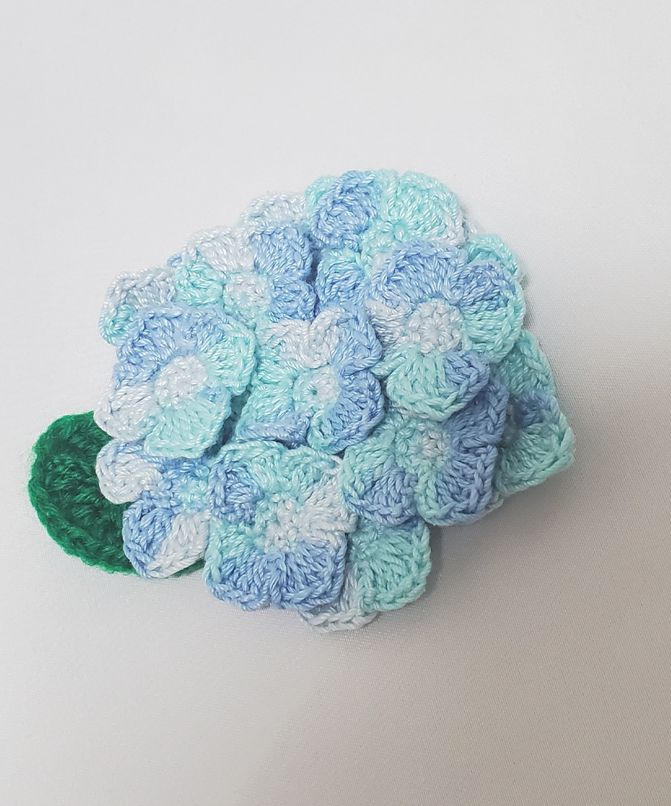
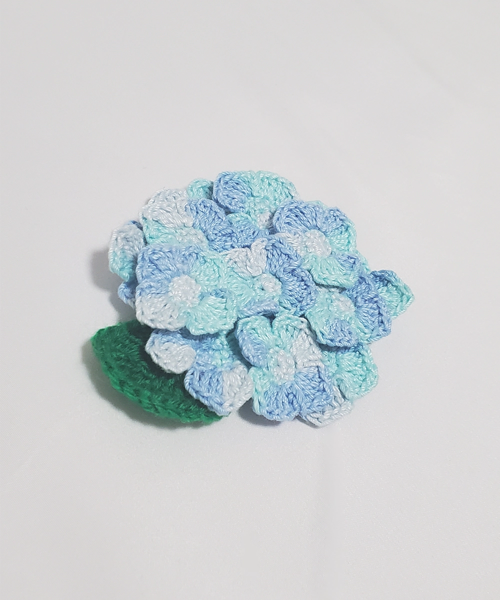
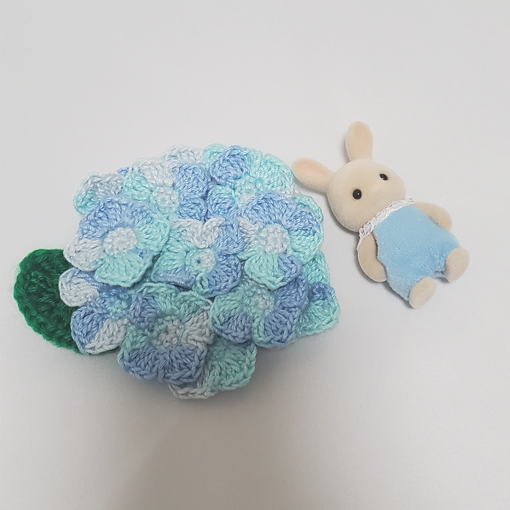
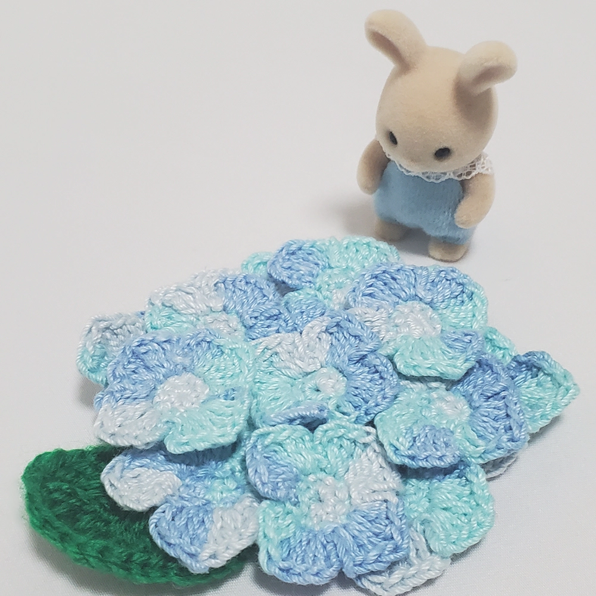

Products
「 ちいさな森のくらし 」




あじさい日和
- color
- blue
- price
- 3000
小さなお人形と一緒に季節の風景を楽しめる、手作りのミニ紫陽花。 ほんのり透け感のある花びらが、梅雨のしっとりとした空気をやさしく演出してくれます。 ちいさな仲間たちと紫陽花のそばで写真を撮れば、まるで絵本の1ページのよう。 ディスプレイや撮影小物にぴったりの、季節感あふれるアイテムです。 ※人形は付属しません。